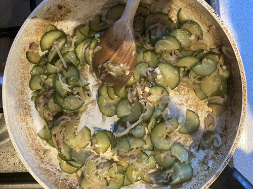
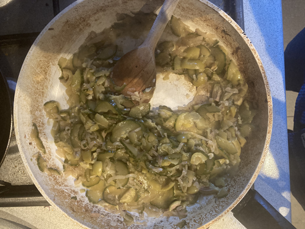
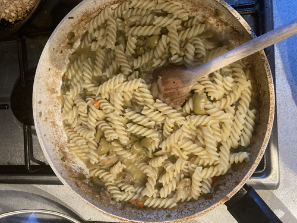
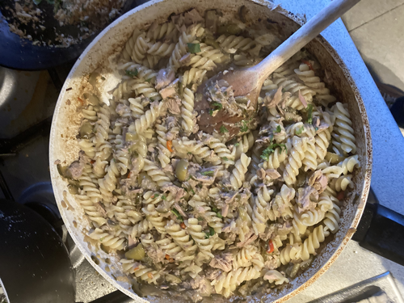

Tuna & Cucumber Pasta
By Harley
serves: 2
This is a delicious recipe sure to blow your socks off




Ingredients
-
Pasta (preferably fusilli), 100g per person
-
400g canned tuna
-
3-4 Shallots
-
1 Cucumber
-
1 Lemon
-
Parmesan cheese
-
Panko
- Olives
Instructions
- Thinly slice the cucumbers and shallots to within an inch of their life
- Add olive oil to the pan
- Steam fry the vegetables, adding water to prevent too much browning
- Add olives
- Start gently fry the panko on the side
- Boil the pasta
- Add pasta water to the pan and stir - we want to emulsify the pasta water with the olive oil
- Add the tuna
- Add the pasta to the pan
- Add a sprinkle of lemon juice
- Serve with parsley, panko, and grated parmiggiano